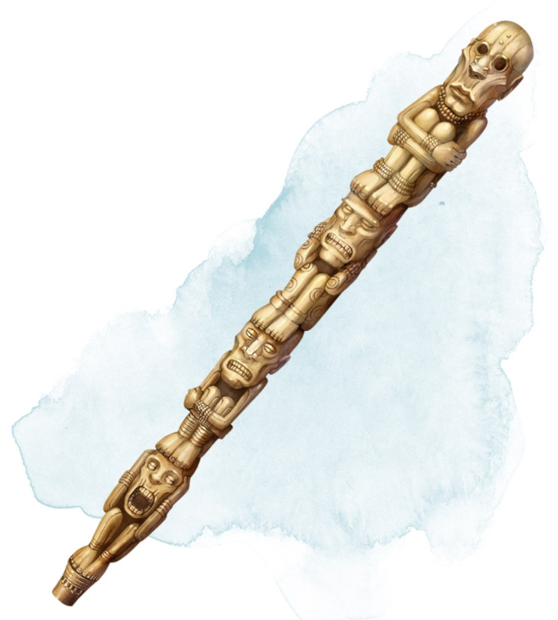

Bâton de guérison
[ Staff of Healing ]
Bâton, rare (nécessite un lien avec un barde, un clerc ou un druide)
Ce bâton possède 10 charges. Tant que vous le tenez, vous pouvez utiliser une action pour dépenser 1 ou plusieurs charges afin de lancer l'un des sorts suivants tout en utilisant votre propre DD des sorts et le modificateur de votre caractéristique d'incantation : soins (1 charge par niveau d'emplacement de sort, jusqu'au niveau 4 maximum), restauration partielle (2 charges) ou soins de groupe (5 charges).
Le bâton récupère 1d6 + 4 charges dépensées chaque jour à l'aube. Si vous dépensez la dernière charge, lancez un d20. Sur un résultat de 1, le bâton disparaît pour toujours dans un flash de lumière.
Le bâton récupère 1d6 + 4 charges dépensées chaque jour à l'aube. Si vous dépensez la dernière charge, lancez un d20. Sur un résultat de 1, le bâton disparaît pour toujours dans un flash de lumière.
Dungeon Master´s Guide (SRD)
